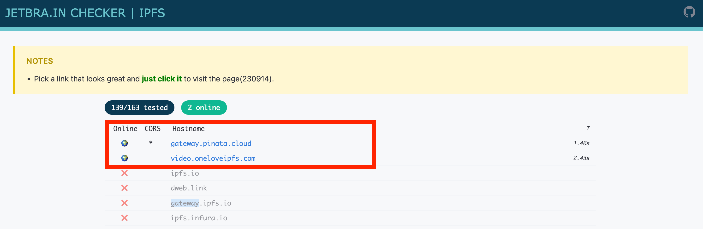
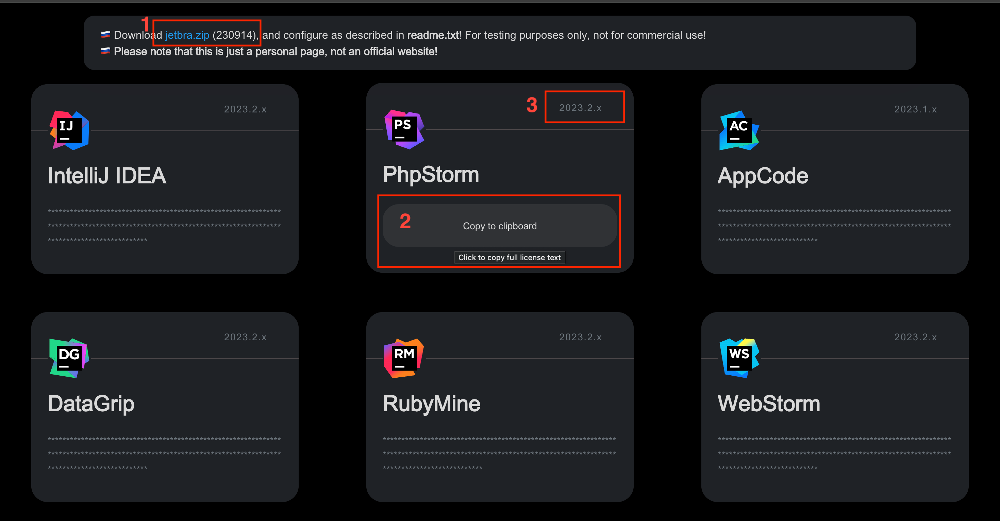

How to Crack JetBrains Suite ?
မိမိတို့ crack လုပ်လိုသည့် offical app ကို jetbrains မှ download ရယူပြီး install ပြုလုပ်ထားပါ။ ပြီးလျှင် အောက်ပါ links များထဲမှ တစ်ခုကို သွားပါ။
Links
https://3.jetbra.in/https://jetbra.in/5d84466e31722979266057664941a71893322460https://cloudflare-ipfs.com/ipfs/bafybeiatyghkzrrtodzt3stm652rkrjxndg4hq2ublfdmifk7plg5k5brq/

ပြီးလျှင် အထက်ပါအတိုင်း online ဖြစ်နေတဲ့ site တစ်ခုခုကို ရွေးလိုက်ပါ။

- လိုအပ်သော crack file တွေကို jetbra.zip ကို နှိပ်ပြီး download ရယူပါ။
- license key ကို copy ပြုလုပ်ပါ။
- သတိပြုရမှာက crack site မှ ပေးထားတဲ့ app version 2023.2.x ဖြင့် ကိုက်ညီမှုမရှိလျှင် တစ်ခါတရံ အလုပ်မလုပ်တာမျိုး ဖြစ်တတ်ပါတယ်။
Auto
Download ရယူထားသော jetbra.zip file ထဲမှ scripts/install.sh ဆိုသည့် file ကို run လိုက်လျှင် အလိုလျှောက် install ပြုလုပ်သွားမည် ဖြစ်ပါသည်။
Manual
တစ်ခါတစ်ရံတွင် install.sh သည် အလုပ်မလုပ်တာမျိုး ရှိတတ်သည့်အတွက် Manual အနေဖြင့် download ရယူလာသော zip ထဲမှ vmoptions folder ထဲမှ {APP_NAME}.vmoptions ကို
မိမိတို့ app folder ၏ bin ထဲမှ {APP_NAME}.vmoptions နေရာတွင် replace ပြုလုပ်ပေးရပါမည်။ နောက်ဆုံးသုံးကြောင်းကို copy ပြီးထည့်လည်း ရပါသည်။
jetbra.zip of vmoptions folder structure
jetbra/
vmoptions/
pycharm.vmoptions # for pycharm
phpstorm.vmoptions # for phpstorm
Installed App Structure for MACOS
PyCharm # The main app file.
bin/
pycharm.vmoptions # replace from jetbra.zip of file
လက်ရှိသုံးလက်စ login ၀င်ပြီးသား jetbrains account ရှိလျှင် log out ပြုလုပ်ပြီး copy ကူးယူလာသော license key ကို ထည့်သွင်းပေးရပါမည်။
expire time တစ်ခုပေါ်လာမည် ဖြစ်ပြီး update မလုပ်မချင်း ဆက်လက် အသုံးပြုနိုင်မည် ဖြစ်ပါသည်။ license key များထဲတွင် app ကိုသာမကပဲ odoo ကဲ့သို့သော paid plugin များကိုပါ ရှာဖွေအသုံးပြုနိုင်ပါသည်။